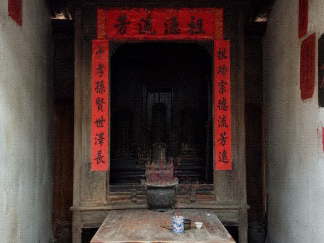

| 桐县实验剧团 | |
| 首页| 参观须知| 本周戏单| 演职员| 团史| 后台预约 | |
栏目 |
 剧团一九九四年从县文工团分出来。分出来的时候后台有一块老郎牌，牌是镇上庙里借的，后来还了，还了又借。 夜戏是二〇〇六年文旅提出来的。提出来为了卖票。班规没为卖票改过，改的是出行名单怎么用。 档案室不对外开放。对外开放的文献在文化馆。文化馆有香火账抄件，抄件能对年份，不能对今晚。 有记者问过齐人。程石说齐人是开锣的事，不是采访的事。采访到此为止。 本页不写神的事。神的事在庙。庙的人叫乔干。乔干不排戏。 |
| 桐县实验剧团 办公电话不外接退票 | |
团史页没用上的口述。一四年文化馆来人约过程石，程石不谈，乔干后来据档案室目录补了几句，补完这页也没改，句子搁在页脚。
剧团一九九四年从县文工团分出来。分出来十二个人，现在七个，走的那些有改开出租车的，有去市里跑龙套的，名册上不留。分出来的时候后台有一块老郎牌，牌是镇上庙里借的，后来还了，还了又借，借还三次，第三次乔干写了借条，借条在文化馆，不在团里。夜戏是二〇〇六年文旅提出来的。提出来为了卖票。当时文旅局长叫老彭，现已退休，退休前把出行名单怎么用写进了合作备忘，班规本身没为卖票改过。档案室不对外开放。有记者要看九四年的批复，批复在西厢铁柜第二层。抄件只认纸，纸在西厢，西厢不开放。对外开放的文献在文化馆。文化馆有香火账抄件，抄件能对年份，不能对今晚。有记者问过齐人。程石说齐人是开锣的事，不是采访的事。采访到此为止。本页不写神的事。神的事在庙。庙的人叫乔干。乔干不排戏。老郎牌现在庙里，不在团里，别往剧团门口找牌。九四年批复那张纸边已经碎，碎了用胶带粘过，粘的时候把「实验」两个字盖住了一半。一半还在。合影十二个人，能对上名的七个。对不上的别补。补了程石撕。撕过一回记者写的「传承」。现在不写传承。卖票从〇六年算。以前是庙戏。